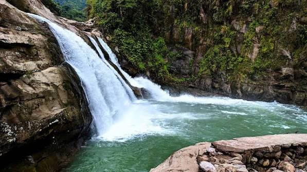
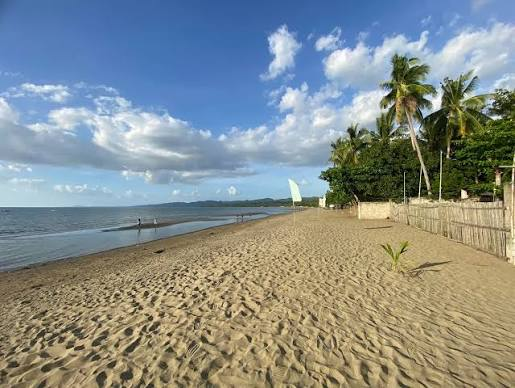
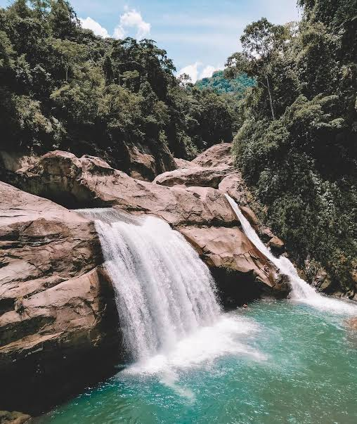
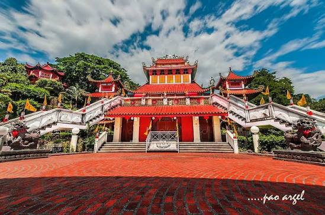
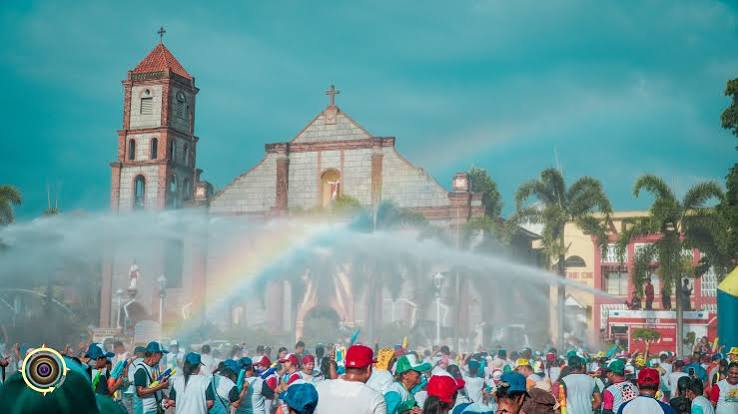
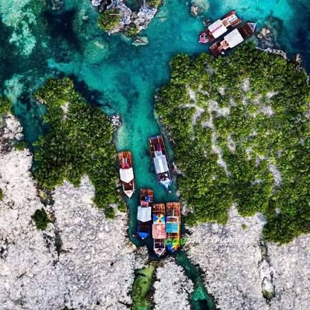

DISCOVER LA UNION
WELCOME TO THE BEAUTIFUL NORTH
Where golden sunsets, beautiful beaches, and unforgettable adventures come together. Experience the charm of the province and discover its hidden treasures.
Explore La Union ↗
GET TO KNOW THE PROVINCE
La Union is a beautiful province located in the Ilocos Region of the Philippines. It is known for its coastlines, welcoming communities, rich culture, and scenic landscapes.
From the famous surfing beaches of San Juan to the natural attractions and historical landmarks found throughout the province, La Union has something special to offer.
A STORY BEHIND THE BEAUTY
La Union was established as a province on March 2, 1850. Its name means "The Union" in Spanish, reflecting the joining of several towns into one province. Today, its capital is San Fernando City. The province continues to preserve its history, traditions, and cultural identity while welcoming visitors from different places.
EXPLORE THE PROVINCE

Famous for surfing and beautiful sunsets.

A refreshing natural escape.

A beautiful cultural landmark.

Known for beaches and grape farms.

Discover its beautiful natural lagoons.
A LITTLE PIECE OF PARADISE
— LA UNION, PHILIPPINES —
MAKE MEMORIES
Enjoy the coastline, explore beautiful beaches, and experience surfing in San Juan.
Discover waterfalls, scenic landscapes, and refreshing natural attractions.
Learn about the province's heritage, traditions, and historical landmarks.
Discover local food, fresh produce, and the famous grape farms of Bauang.
DISCOVER LA UNION